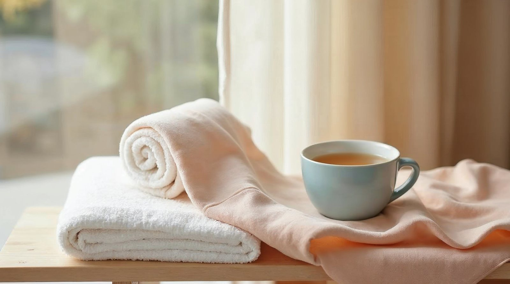

이종호 한의사 감수좋은꿈참사랑한의원 대표원장 (한의사 면허번호 19769)발행 2026-11-24 · 수정 2026-11-26
이 글의 차례
- 왜 이런 불편이 생길 수 있나요
- 손가락은 왜 일을 시작할 때 더 뻣뻣할까요?
- 왜 허리는 일을 마친 뒤 더 뻣뻣할까요
- 비슷해 보여도 구분해 볼 점
- 먼저 이렇게 여쭙니다
- 일상에서 먼저 해 볼 수 있는 것
- 일하는 중 2분 쉬는 틈에 해 볼 것
- 상황별 예시
- 스스로 점검해 보세요
- 상자를 드는 순서는 어떻게 바꿀까요?
- 새벽 근무 뒤 잠과 식사는 어떻게 맞출까요?
- 장갑과 옷은 어떻게 고를까요?
- 자주 하는 오해
- 찬물 작업 뒤 손은 어떤 순서로 녹이면 좋을까요?
- 쉬는 날에는 어떻게 보내면 좋을까요?
- 집에 돌아와 쉬는 시간에는 무엇을 해 볼까요?
- 가족이 함께 살펴 주면 좋은 것
- 동료와 함께 해 볼 수 있는 것
- 한의원에서 함께 살필 수 있는 경우
- 첫 방문 진료는 어떻게 진행되나요?
- 진통제를 자주 드신다면
- 다시 오실 때는 이렇게 이어서 봅니다
- 새벽 일을 오래 이어 가려면 무엇을 지키면 좋을까요?
- 이렇게 기록해 오시면 상담이 쉬워집니다
- 이런 증상은 먼저 확인이 필요합니다
- 얼마나 지켜보고 언제 상담할까요?
노량진에는 새벽부터 문을 여는 시장이 있어, 이른 새벽에 일을 시작하는 이웃이 많습니다. 찬물에 손을 담그고 얼음과 상자를 옮기다 보면 손끝이 시리고, 일이 끝날 즈음이면 허리가 뻣뻣해진다는 이야기를 듣습니다. 일을 줄이기 어려운 만큼, 같은 일을 조금 덜 힘들게 하는 방법을 함께 찾는 것이 먼저입니다.
저는 새벽 일을 하시는 분께 일을 줄이라는 말부터 꺼내지는 않으려 합니다. 대신 상자를 드는 순서, 장갑을 바꾸는 때, 쉬는 시간의 손 관리처럼 일터에서 바로 해 볼 수 있는 것을 함께 찾습니다.
왜 이런 불편이 생길 수 있나요
- 찬물과 얼음에 손이 오래 닿으면 손끝의 혈관이 좁아져 시리고 저린 느낌이 생길 수 있습니다.
- 젖은 장갑을 낀 채 칼질이나 포장을 반복하면 손목과 손가락 힘줄에 부담이 쌓입니다.
- 허리를 숙인 채 무거운 상자를 들고 몸을 비트는 동작이 하루에도 수십 번 반복됩니다.
- 새벽 근무로 잠과 식사 시각이 뒤바뀌면 몸이 쉽게 지치고 회복이 더딜 수 있습니다.
손가락은 왜 일을 시작할 때 더 뻣뻣할까요?
새벽 찬물 작업을 하면 손가락이 뻣뻣하고 주먹을 쥐기 어렵다고 말씀하시는 분이 많습니다. 차가운 환경에서는 손의 혈액순환이 줄고 힘줄과 관절 주변이 굳기 쉬워, 일을 시작하는 첫 한 시간에 특히 뻣뻣함을 느끼기 쉽습니다.
칼질이나 포장처럼 손목을 같은 방향으로 꺾는 동작이 반복되면 엄지 쪽 손목이나 손바닥 아래쪽이 아플 수 있습니다. 손가락이 저리고 밤에 더 심해진다면 손목을 지나는 신경이 눌리는 경우도 있어 함께 살핍니다.
왜 허리는 일을 마친 뒤 더 뻣뻣할까요
일하는 동안에는 몸이 움직이고 있어 허리 불편을 덜 느끼다가, 일을 마치고 쉬면 근육이 식으면서 뻣뻣함이 드러나는 경우가 많습니다. 차가운 작업장에서 오래 서 있었다면 더 그렇습니다.
일을 마친 직후 바로 눕거나 앉기보다 5분쯤 천천히 걸으며 몸을 풀고, 집에 돌아가 따뜻한 물로 씻어 보세요.
비슷해 보여도 구분해 볼 점
- 손끝이 시리고 녹이면 금방 돌아오는 경우는 찬 환경의 영향이 큰 경우가 많습니다.
- 손가락 색이 하얗게, 푸르게 변했다가 붉게 돌아오는 일이 반복된다면 그 모습을 사진으로 남겨 진료 때 보여 주세요.
- 엄지와 검지, 중지 쪽이 저리고 밤에 자다 깨는 경우는 손목 신경을 함께 살펴야 합니다.
- 허리 통증이 엉덩이를 지나 다리로 뻗치는 경우는 허리 신경을 함께 살펴야 합니다.
먼저 이렇게 여쭙니다
- 몇 시에 일을 시작하고 몇 시간쯤 일하시나요?
- 찬물이나 얼음에 손이 닿는 시간이 긴가요?
- 하루에 상자를 몇 번쯤 드시나요?
- 일이 끝난 뒤 잠은 언제, 얼마나 주무시나요?
일상에서 먼저 해 볼 수 있는 것
- 상자를 들 때는 무릎을 굽히고 상자를 몸 가까이 붙여 들기
- 방수 장갑 안에 얇은 면장갑을 겹쳐 끼고, 젖으면 바로 갈아 끼기
- 쉬는 틈마다 따뜻한 물로 손을 녹이고 물기를 잘 닦기
- 몸을 비틀지 말고 발을 옮겨 방향을 바꾸기
- 낮에 잘 때는 빛을 가리고 일정한 시각에 눕기
일하는 중 2분 쉬는 틈에 해 볼 것
- 미지근한 물에 손을 담가 녹인 뒤 물기를 완전히 닦기
- 손목을 위아래로 천천히 10번 굽혔다 펴기
- 주먹을 쥐었다 손가락을 활짝 펴는 동작 10번
- 허리를 손으로 받치고 천천히 뒤로 젖혀 보기 몇 번
- 양발을 어깨너비로 벌리고 제자리에서 무릎을 살짝 굽혔다 펴기
아픈 동작이 있으면 억지로 하지 말고 멈추세요. 어떤 동작에서 아팠는지 적어 오시면 진료 때 함께 살펴봅니다.
상황별 예시
- 예를 들어 하루 수십 번 상자를 트럭에서 내리는 일을 하신다면, 상자를 바닥에서 바로 들기보다 허리 높이의 받침에 올려 두고 옮기면 숙이는 횟수를 줄일 수 있습니다.
- 예를 들어 일이 끝나고 오전에 잠드는 분이라면, 귀가 뒤 바로 눕기보다 따뜻한 물로 씻고 가볍게 식사한 뒤 같은 시각에 잠자리에 드는 순서를 정해 두시면 잠이 덜 흔들릴 수 있습니다.
- 예를 들어 오랫동안 같은 손으로만 칼질을 해 오셨다면, 칼 손잡이에 미끄럼 방지 테이프를 감아 손에 힘을 덜 주는 방법도 있습니다.
스스로 점검해 보세요
- 일을 시작하고 첫 한 시간 동안 손가락이 특히 뻣뻣하다
- 장갑이 젖은 채로 한 시간 넘게 일하는 날이 많다
- 밤이나 낮잠 중에 손이 저려 깬 적이 있다
- 상자를 들 때 허리를 숙이고 몸을 비트는 일이 잦다
- 일이 끝난 뒤 잠을 다섯 시간도 못 자는 날이 많다
- 손이나 허리 통증 때문에 진통제를 자주 찾는다
해당하는 항목을 진료 때 말씀해 주시면 일터에서 바꿔 볼 것부터 함께 정합니다.
상자를 드는 순서는 어떻게 바꿀까요?
- 상자 앞에 바짝 다가가 양발을 어깨너비로 벌리기
- 허리를 숙이지 말고 무릎과 엉덩이를 굽혀 몸을 낮추기
- 상자를 몸에 붙인 채 배에 살짝 힘을 주고 다리 힘으로 일어서기
- 방향을 바꿀 때는 허리를 비틀지 말고 발을 옮겨 몸 전체를 돌리기
- 내려놓을 때도 같은 순서를 거꾸로 하기
처음에는 번거롭게 느껴지지만 몇 주 하다 보면 몸에 익습니다. 너무 무거운 상자는 둘이 함께 들거나 수레를 쓰는 편이 허리 부담을 덜 수 있습니다.
새벽 근무 뒤 잠과 식사는 어떻게 맞출까요?
새벽에 일하시면 아침이 저녁처럼, 낮이 밤처럼 흘러갑니다. 잠드는 시각을 매일 비슷하게 맞추는 것부터 해 보세요.
일 시작 전에는 빈속으로 나가지 말고 따뜻한 음료와 간단한 먹거리로 속을 채우세요. 일이 끝난 뒤에는 기름진 음식보다 밥과 국처럼 담백한 식사를 하고, 일이 끝나 갈 무렵부터는 커피를 줄여 보세요.
대표원장은 잘 먹고, 잘 싸고, 잘 자고, 마음 편하고, 몸 따뜻하게 지내는 것을 몸이 회복하는 바탕으로 봅니다. 새벽 찬물 일을 하시는 분은 그 가운데 잠과 몸의 온기가 먼저 흔들리기 쉬워, 손목과 허리만큼 그 이야기도 자세히 여쭙습니다.
장갑과 옷은 어떻게 고를까요?
- 손에 꼭 맞는 장갑을 고르기(너무 크면 손에 힘이 더 들어갑니다)
- 여분의 면장갑을 두세 켤레 챙겨 젖으면 바로 바꾸기
- 허리와 등이 드러나지 않도록 상의를 바지 안에 넣거나 조끼를 덧입기
- 바닥이 미끄러운 곳에서는 밑창이 미끄럽지 않은 장화 신기
자주 하는 오해
- "손이 시린 건 일하면 당연하다"고 넘기기 쉽지만, 녹여도 저림이 오래 남거나 밤에 깨는 일이 잦다면 살펴볼 필요가 있습니다.
- "허리는 쉬면 되니 참고 일한다"고 하시는 분도 있지만, 드는 자세를 바꾸는 것으로 부담을 덜 수 있는 경우도 있습니다.
찬물 작업 뒤 손은 어떤 순서로 녹이면 좋을까요?
- 젖은 장갑을 벗고 마른 수건으로 손의 물기를 먼저 닦기
- 미지근한 물에 손을 담가 천천히 녹이기
- 손이 녹으면 물기를 다시 꼼꼼히 닦고, 손가락 사이도 말리기
- 주먹을 쥐었다 펴고 손목을 천천히 돌려 보기
- 손이 트지 않도록 보습제를 바르고 마른 장갑 끼기
일을 마치고 손이 덜 녹은 채로 바로 잠자리에 들지 말고, 귀가 뒤에도 이 순서를 한 번 해 보세요. 손 느낌이 어땠는지는 진료 때 말씀해 주세요.
쉬는 날에는 어떻게 보내면 좋을까요?
쉬는 날에는 밀린 잠을 몰아 자고 싶어지지만, 잠드는 시각이 크게 바뀌면 다시 일하는 날 몸이 더 힘들 수 있습니다. 평소보다 한두 시간 정도만 더 자고, 낮에 햇볕을 쬐며 가볍게 걸어 보세요.
허리와 손을 쉬게 하되, 하루 종일 누워 있기보다 짧게 자주 움직이는 편이 다음 날 덜 굳는 데 도움이 될 수 있습니다.
집에 돌아와 쉬는 시간에는 무엇을 해 볼까요?
- 따뜻한 물로 씻으며 손과 허리를 천천히 풀기
- 누워서 무릎을 세우고 좌우로 천천히 흔들기 10번
- 손가락을 하나씩 천천히 뒤로 젖혀 늘이기
- 잠들기 전 휴대폰을 내려놓고 방을 어둡게 하기
해 본 것과 다음 날 아침 손과 허리의 느낌을 함께 적어 오시면 진료 때 살피기 좋습니다.
가족이 함께 살펴 주면 좋은 것
- 손이 저려 자다 깨는 일이 잦아지지 않았는지
- 허리가 아파 걸음이 느려지거나 앉았다 일어나기 힘들어하지 않는지
- 일을 마친 뒤 끼니를 거르고 바로 잠드는 날이 많지 않은지
동료와 함께 해 볼 수 있는 것
- 무거운 상자는 둘이 함께 들자고 미리 약속하기
- 쉬는 시간마다 함께 손목과 허리를 2분씩 풀기
- 미끄러운 바닥은 바로 닦고, 통로에 짐을 쌓아 두지 않기

한의원에서 함께 살필 수 있는 경우
- 손목과 손가락이 시리고 저린 경우, 일하는 자세와 손 쓰는 습관을 함께 살핍니다.
- 허리가 뻣뻣하고 아침에 더 굳는 경우, 드는 동작과 몸의 균형을 함께 살핍니다.
- 새벽 근무로 잠과 식사 리듬이 흔들린 경우, 하루 리듬을 함께 정리합니다.
좋은꿈참사랑한의원에서는 모든 분께 맥부터 짚으며 하루 일하는 모습을 여쭙고, 필요하면 초음파 등으로 아픈 자리를 살핍니다. 그 뒤 침·약침·추나·온열 치료 가운데 상태에 맞는 방법을 정합니다. 귀가 전에는 일터에서 바꿔 볼 동작 한 가지를 함께 정합니다.
첫 방문 진료는 어떻게 진행되나요?
접수 뒤 진료실에서는 맥을 짚으며 몇 시에 일어나 어떤 일을 몇 시간 하시는지, 쉬는 시간은 언제인지를 여쭙니다. 손을 쓰는 모습을 직접 흉내 내 보여 주시면 어느 동작에서 부담이 실리는지 이해하기 쉽습니다. 작업복 차림 그대로 오셔도 괜찮고, 손이 많이 차가우면 잠시 녹이신 뒤 진찰을 시작합니다.
진찰과 함께 손목과 손가락, 허리를 움직여 보며 불편한 방향을 확인합니다. 오늘 할 방법과 이유를 먼저 설명드린 뒤 진행하고, 일하면서 이어 갈 수 있는 방문 간격도 함께 정합니다. 초진은 진찰 시간이 있어 재진보다 오래 걸릴 수 있으니 시간 여유를 두고 오세요.
그날 가장 아픈 한 곳은 원장이 직접 치료하고, 나머지 뻐근한 곳은 직원이 자기장·온열·패드형 물리치료로 넓게 이어서 살핍니다. 힘줄 부위 통증이 오래가면 진찰 뒤 체외충격파를 검토하기도 하니, 혈액을 묽게 하는 약을 드시거나 치료 부위에 상처가 있으면 먼저 알려 주세요.
진통제를 자주 드신다면
손이나 허리가 아파 진통제를 자주 드시는 분도 있습니다. 어떤 약을 일주일에 몇 번쯤 드시는지 약 이름을 적거나 통을 사진으로 찍어 오세요.
병원에서 처방받은 약은 처방한 의사와 상의 없이 끊지 마시고 그대로 알려 주세요. 약국에서 사 드시는 진통제도 자주 찾게 된다면 약사나 의사와 상의해 주세요. 한약 상담을 하게 되면 그 목록을 보고 함께 드셔도 되는지 살핍니다.
다시 오실 때는 이렇게 이어서 봅니다
다시 오시면 지난번 정한 일터 동작 한 가지를 해 보셨는지, 그 뒤 손과 허리가 어땠는지부터 여쭙습니다. 진맥은 매번 다시 짚고, 일하는 시간과 잠이 그사이 어땠는지 이어서 살핍니다.
일이 많았던 날과 적었던 날을 달력에 표시해 오시면 불편이 커지는 날을 함께 찾기 쉽습니다.
새벽 일을 오래 이어 가려면 무엇을 지키면 좋을까요?
새벽 일은 몇 달이 아니라 몇 년씩 이어 가시는 분이 많습니다. 그래서 저는 한 번에 많은 것을 바꾸기보다 오래 지킬 수 있는 습관 몇 가지를 권합니다. 젖은 장갑은 바로 바꾸기, 상자는 무릎으로 들기, 잠드는 시각 맞추기입니다.
이 세 가지만 지켜도 손과 허리에 쌓이는 부담을 덜 수 있는 경우가 있습니다. 해 보시다가 어려운 점이 있으면 진료 때 말씀해 주세요. 일하는 모습에 맞게 다시 함께 고쳐 봅니다.
손이나 허리 불편이 오래 이어지면 일에 대한 걱정과 잠 문제까지 겹치기도 합니다. 그런 마음의 부담도 진료 때 편하게 이야기해 주세요.
이렇게 기록해 오시면 상담이 쉬워집니다
- 하루 일하는 시간과 가장 무거운 상자의 대략적인 무게
- 손이 가장 시리고 저린 시간대와 작업
- 허리가 아픈 동작(들 때, 내려놓을 때, 비틀 때)
- 일이 끝난 뒤 잠든 시각과 깬 시각
오래 해 온 일인 만큼 한 번에 다 바꾸지 않아도 괜찮습니다. 다음에 오시면 일터에서 바꿔 본 동작 한 가지가 어땠는지부터 여쭙겠습니다.
이런 증상은 먼저 확인이 필요합니다
- 손가락이 하얗거나 검푸르게 변한 뒤 녹여도 색이나 감각이 돌아오지 않는 경우
- 손이나 다리에 힘이 점점 빠지거나 대소변 보기가 어려워진 경우
이런 신호가 있으면 한의원보다 가까운 병원이나 응급실을 먼저 찾으세요.
얼마나 지켜보고 언제 상담할까요?
- 일이 많은 날에만 뻐근하고 하루 쉬면 풀리는 경우는 일터 요령을 1~2주 해 보며 지켜보셔도 됩니다.
- 손 저림 때문에 자다 깨는 일이 잦아지거나, 허리가 아파 상자를 드는 일이 힘들어졌다면 상담을 받아 보세요.

여쭙는 것
- 몇 시에 일을 시작하고 몇 시간쯤 일하시나요?
- 찬물이나 얼음에 손이 닿는 시간이 긴가요?
- 하루에 상자를 몇 번쯤 드시나요?
생활에서 해 볼 것
- 상자를 들 때는 무릎을 굽히고 상자를 몸 가까이 붙여 들기
- 방수 장갑 안에 얇은 면장갑을 겹쳐 끼고, 젖으면 바로 갈아 끼기
- 쉬는 틈마다 따뜻한 물로 손을 녹이고 물기를 잘 닦기
한의원에서 함께 살필 것
- 손목과 손가락이 시리고 저린 경우, 일하는 자세와 손 쓰는 습관을 함께 살핍니다.
- 허리가 뻣뻣하고 아침에 더 굳는 경우, 드는 동작과 몸의 균형을 함께 살핍니다.
- 새벽 근무로 잠과 식사 리듬이 흔들린 경우, 하루 리듬을 함께 정리합니다.
먼저 확인이 필요한 신호
- 손가락이 하얗거나 검푸르게 변한 뒤 녹여도 색이나 감각이 돌아오지 않는 경우
- 손이나 다리에 힘이 점점 빠지거나 대소변 보기가 어려워진 경우
한눈에 보는 표
| 구분 | 핵심 |
|---|---|
| 여쭙는 것 | 몇 시에 일을 시작하고 몇 시간쯤 일하시나요? 찬물이나 얼음에 손이 닿는 시간이 긴가요? |
| 생활에서 해 볼 것 | 상자를 들 때는 무릎을 굽히고 상자를 몸 가까이 붙여 들기 방수 장갑 안에 얇은 면장갑을 겹쳐 끼고, 젖으면 바로 갈아 끼기 |
| 한의원에서 함께 살필 것 | 손목과 손가락이 시리고 저린 경우, 일하는 자세와 손 쓰는 습관을 함께 살핍니다. 허리가 뻣뻣하고 아침에 더 굳는 경우, 드는 동작과 몸의 균형을 함께 살핍니다. |
| 먼저 확인이 필요한 신호 | 손가락이 하얗거나 검푸르게 변한 뒤 녹여도 색이나 감각이 돌아오지 않는 경우 손이나 다리에 힘이 점점 빠지거나 대소변 보기가 어려워진 경우 |
자주 묻는 질문
일이 끝나고 오면 진료 시간이 맞을까요?
평일은 저녁 8시까지(점심 13:00~14:00), 토·일·공휴일은 오후 3시까지 점심시간 없이 진료하니 일정에 맞춰 예약해 주세요.
허리 보호대를 계속 차도 되나요?
무거운 일을 할 때 잠깐 도움이 될 수 있지만, 하루 종일 차기보다 상태를 보고 함께 정하는 것을 권합니다.
손이 시릴 때 뜨거운 물에 바로 담가도 되나요?
너무 뜨거운 물은 감각이 둔한 손에 화상을 입힐 수 있어 미지근한 물로 천천히 녹이는 것을 권합니다.
일을 쉬지 못하는데 치료를 받아도 되나요?
네. 일을 이어 가시면서 할 수 있는 방법을 진찰 뒤 함께 정하고, 일터에서 바꿔 볼 동작도 같이 찾습니다.
좋은꿈참사랑한의원은 재진 때 지난번 이야기부터 이어서 여쭙니다. 진료시간과 예약은 오시는 길에서 확인하세요.
어디서 상담받을 수 있나요?
좋은꿈참사랑한의원은 서울 동작구 만양로2길 2 신성빌딩 3층·5층(서울 동작구 상도동, 7호선 상도역 3번 출구 근처)에 있습니다. 한의사 3명(이종호 대표원장, 조영기 수석진료원장, 정원영 진료원장)이 진료합니다. 진료시간은 평일 09:30~20:00(점심 13:00~14:00), 토·일·공휴일 09:30~15:00이며, 방문 전 전화로 확인을 권합니다. 예약은 네이버 예약, 카카오톡 상담, 전화 02-815-7510로 받습니다.
이 글은 일반적인 건강 정보이며 개인의 진단이나 치료를 대신하지 않습니다. 증상이 있거나 복용 중인 약이 있다면 진료를 통해 확인하세요. 치료 효과는 개인마다 다를 수 있습니다.
작성 기준: 일반적으로 알려져 있는 건강 정보를 참고해 정리했습니다(대표원장 감수). 증상 기록은 1~2주 동안 하루 1회, 비슷한 시간에 적어 오시면 지난 상태와 비교하기 쉽습니다.